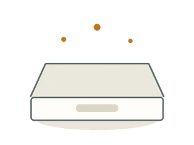
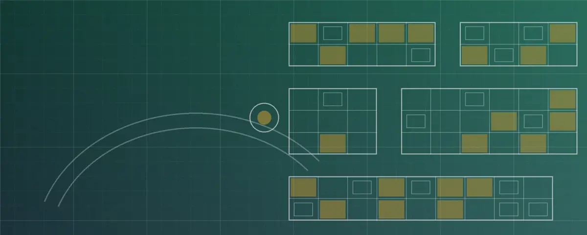

0 Registrados
0 En proceso
0 Vencen en 7 días o menos
0 Concluidos
Nuevo trámite
Trámites registrados

No hay trámites que coincidan con el filtro.
Tablero de control
Registra cada permiso, consulta su estatus y detecta a tiempo los que están por vencer.


No hay trámites que coincidan con el filtro.